| |
|
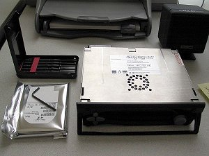 |
Rio Car Disk Upgrade Guide
Text by Tony Fabris, based on information from
empeg and the empeg BBS.
Photos courtesy of Dan Wallach and Rod Little.
Movie files courtesy of David Moss
|
WARNING:
If you open your player to upgrade the disk drives, it will void your warranty. There is a real possibility that you could damage the unit if you perform the procedure incorrectly or clumsily. Because of the shock-mount cradle, the fragile display board, and the limited clearances inside the case, it's not as simple as upgrading a computer's hard disk.
|
Upgrade Preparation
There are a few questions you need to ask yourself as you prepare for the upgrade:
- Do I own a Mark 1 or a Mark 2?
If adding a drive to a Mark 1, you'll need to pre-order a special kind of IDE cable.
- What kind of disk drives will fit in my player?
Mark 1 and mark 2 players have different clearances.
- How big do I want to go?
There are some limitations that you might need to work around, described below.
- Right now, does my player have one hard disk or two?
Is there room for a second disk, or will you have to juggle drives?
- Do I want to keep the primary disk drive and add a second drive?
Adding a second drive is fairly simple.
- Do I want to replace the primary disk drive?
Replacing the primary drive is complicated if you want to keep the music on it.
Selecting a disk drive:
The player accepts industry-standard 2.5" laptop IDE hard disks. They must be laptop drives, not the bigger 3.5" desktop drives. They must also be IDE hard disks rather than SATA hard disks. Another limitation is the height of the disk drive. There's a limited amount of vertical clearance in the player case, and the shock-mount cradle needs a little room to move.
| 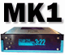 |
For the empeg Mark 1, the drive must be no taller than 14 millimeters.
|
| 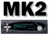 |
For the empeg Mark 2 and the Rio Car, the drive must be no taller than 19.5 millimeters.
|
Disk drive access speed isn't a factor, since the player uses an aggressive caching algorithm that leaves the disks spun down most of the time. Any modern laptop hard disk should be fast enough, and you will not notice any speed increase by purchasing a faster disk drive. In fact, if choosing between a fast drive and a slower drive, the slower drive is probably the better choice because it will most likely be cheaper and produce less heat. Your biggest concern will be the price/capacity trade-off.
How much you spend on a new hard disk is totally up to you. Some people like to use Pricewatch or one of the online auction sites to locate good deals on hard disks. Buyer beware, however, some of the outfits hawking their wares on these sites can be a little shady. You might want to make sure you're getting a full manufacturer's warranty on the disk drives before making a purchase.
Although nearly any IDE laptop drive should work, there have been some reports of compatibility problems when mixing two dissimilar drives in a Mark 2 unit. One report was of a Toshiba drive which refused to be a slave to an IBM drive. Another report was of an IBM 48gb drive that wouldn't work in the same player as an IBM 10gb drive, regardless of the master/slave order. Another possible compatibility problem is if there's an extreme difference in spin-up time between the two drives, it might cause the second drive to time out if it takes too long. So you may want to consider installing your drives as a matched pair. This isn't strictly necessary, and if you're lucky, you might be able to work around these kinds of problems simply by swapping the drive order. Also there have been reports of certain drives which aren't properly being detected as being the master drive in a single-drive configuration. Details of the problem and the work-around are posted here.
The maximum disk drive size allowed by the player's original Linux kernel is 128gb per disk drive. If you have a hard disk larger than this, you will need to install the latest Hijack Kernel on top of the regular kernel in order for large drives to work. Also, the official empeg disk builder images have not been upgraded to support large drives, and tend to crash if the hard disk is bigger than about 60 gigs. Work arounds to this problem are covered in the appropriate section of this guide. The work arounds are mostly specific to Mark 2 players, so if you are trying to upgrade a Mark 1 player, you might want to consider keeping your disk drive sizes under 60gb.
Something else to think about: Even if you do successfully install high capacity disks into the player, you might run into some limitations when you start filling those disks with songs. The player has a limited amount of RAM for caching the database of songs. Players with too many songs on the hard disk (between 10,000 and 20,000 depending on the amount of data in their tags) will hit the database size limit and will have trouble indexing the entire player contents all at once. This can be worked around by manually rebuilding the database when you add new music, and dividing the music up into smaller sub-playlists and playing only those on playback. There are also other tricks you can do that can increase those limitations, discussed in detail here.
Besides the disk drive, what else do I need?
- In addition to the drive height limitation listed above, there is another important difference between the two models of player. The Mark 1 has two separate IDE connectors on the motherboard, the Mark 2 has a single IDE connector with a two-head cable.
|
If you will be adding a second disk drive to the Mark 1, you will need to purchase a proper IDE connector cable. Not just any cable will do, it must be the proper length. There's very little room inside the case, and if you get a cable that's too long, you'll damage the components trying to cram the cable in there. The correct cable can be purchased from Videk, part #3017.
|
| If you're adding a second disk drive to the Mark 2, it's a lot easier because the Mark 2 has a single cable with two connectors, and the cable is already there waiting for you. However, you'll need to configure the disk drives in an IDE master/slave configuration, which will probably require a jumper to be installed on some pins on the second disk drive. Consult the manual that came with your new drive for instructions on how to properly set it as a slave using a jumper.
If required, this jumper should be included with the new drive. If it isn't, you'll have to scrounge one, find some at a local computer store, or order some. Note that it must be the correct size jumper, which is 2mm. If you use the wrong size jumper, for example, if you use a 2.54mm jumper, you might get intermittent problems where the jumper loses contact because the grippers on the jumper are too large for the pins on the disk drive. According to Hugo, the correct jumpers are sold by Farnell, part numbers 510920 (blue), 510932 (black) and 510944 (red). For the US, the Jameco part number is reportedly 119263. |
Some electrical tape will be needed to insulate the drive cradle from the components on the bottom of the disk drive.
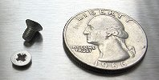You'll also need four screws to secure the drive to the shock-mount cradle. These screws are pretty standard disk-mounting screws (some might have even been included with your new disk drive), but remember that they have to be the correct thread (M3), the correct length (short), and their heads have to be fairly low-clearance so they don't bump the components on the motherboard. If you're a hardware hacker, you probably already have some lying around that will work. If not, try local computer stores, bringing in one of the original screws for reference. (Don't tell anyone I said this, but in a pinch, you could steal two diagonal screws from the first hard disk to secure the second one. If you do, make sure to get some of the right screws and finish the job as soon as you can.)
You'll need a set of washers to raise the drives above the drive cradle so that there's no risk of pressure on the drive spindle. This was recently discovered to be necessary for some drives (the IBM DJSA-220 in particular), but in this guide I will recommend installing the washers on all drives to make absolutely sure that it's been taken care of in all cases. Even if your original drive came without washers, you should install them. The exact size of the washers is not critical as long as they fit around the screws and do not touch any of the components on the bottom of the drive.Note: Depending on the player configuration and the type of washers you get, you may need to compensate by getting slightly longer screws.
You'll need to have Hyperterminal prepared to connect to the player's serial port. Complete instructions for this are located in the Customization section of the FAQ. Make sure your serial connection works and you can see the player's output in Hyperterminal before starting.
You'll need to get the Disk Builder utility upgrade from the Support section of the empeg web site. Make sure to get the proper one for your player (Mark 1 or Mark 2), and use the latest version.Note: Do not attempt to run this file now! It will format whatever hard disk is plugged in.
On second thought, don't bother with the official empeg version of the disk builder any more. If you are working with large hard disks (40-60 gigs or larger), then the official empeg disk builder doesn't work, and if you're working with small disks, it doesn't hurt to use the bigdisk version. So instead, grab a copy of Mark Lord's Special Disk Builder, which should work with any size disk drives. Note: Do not attempt to run this file now! It will format whatever hard disk is plugged in.
You will need to re-install the player software upgrade onto the new disk drive after formatting it, so make sure you also have an installer ready for that. Your best choice is the 2.01 Final Software Installer for Large Disks even if your disk is a small one, since it works with all disk sizes. Make sure that it is the correct one for your player model (Mark 1 or Mark 2). If necessary, upgrade your current player software before starting this procedure to make certain that it's the same one as what you'll be installing on the new disk. This is important, so that a mismatch between the flash kernel and the player on the disk doesn't happen as you swap disks.
If you have a Mark 1 player, there isn't a bigdisk version of the full player installation available. Instead, download the official empeg player software installer (Mark1, 2.01 final, developer version) and be ready to put the latest Hijack onto the player as soon as the upgrade is complete. At the time of this writing, there isn't an easy solution for disks 160GB or larger in a Mark 1 player, so keep your disks under 160 on Mark 1's.
Have your original power supply (the one you got with your player) ready to use. If you are using a third-party power supply, it might have been adequate for a single-disk player but not for a two-disk player. Just to be on the safe side, use the original power supply during the upgrade so that it doesn't fail with a voltage under-run at a crucial moment.
You will need a properly-sized Phillips-head screwdriver to loosen the screws that hold the shock mount tray in place. Your best bet is to use a screwdriver with a set of interchangeable heads and a large handle. A set of small "jeweler's screwdrivers" might be the correct size, but the lack of a large handle means that you might not be able to apply enough torque to loosen the screws.
If you're a Mark 2 owner, you'll need a 2.5mm hex tool to remove the faceplate.
Adding a second drive or replacing the primary drive?
By far, it's much easier to add a second drive than it is to replace the first drive. When done properly, the second drive simply appears as extra capacity on the player, and there's no need to move files or do anything special to get the player to recognize it. All that needs to happen is that the second drive needs to be formatted (more on this later).
Replacing the primary disk drive is similar to adding a second disk drive, but there are some extra steps involved if you want to preserve the existing files and playlists. You install both drives, then use the Linux command prompt to copy the song files from the old drive to the new drive.
If you are replacing one or both drives in a two-drive unit, or you're doing some other kind of complex upgrade, you'll probably need to play a game of Musical Drives as you format, swap, and copy your files among the drives. Use the instructions below as a general guide, and do your best to keep track of which drives are which. Use caution not to accidentally format a drive which contains MP3 files you don't want to lose.
Step 1: Open the player
|
Unplug the player. Remove the four screws on the top and lift off the cover, breaking the warranty seals if necessary. Do not touch the display board at the front of the unit.
|
|
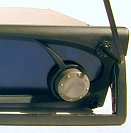Unplug the player. Use the 2.5mm hex tool to unscrew the four bolts and remove the fascia. Pull the volume knob off its shaft, then remove the transparent faceplate. Use caution: The inner surface of the transparent faceplate has a special EMF coating. Be careful to lay the part face down so you don't scratch it. Put the four buttons and the knob in a safe place.
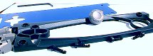
The top lid slides forward and is connected by tab-and-groove bits. Break the warranty seal if necessary.
Note: Make sure to extend the carrying handle so that the sled-grip hooks don't get in the way as you try to remove the lid.
It's a tight fit as the front tabs travel over the corresponding tabs on the main case, and levering them slightly upwards with a screwdriver is usually necessary. Be careful not to let the screwdriver damage the sled hooks or anything else inside the case.
Click here to view a video file (3.17mb mpeg) of how to remove the lid without damaging it. Click here to view a video file (525k mpeg) of a close up of how to lever the corner tabs near the sled hooks. Videos courtesy of David Moss and Marcus Wakefield.
Be very careful not to bump the display board as you do this, and do not attempt to remove the display board for any reason. This procedure can be completed with the display board in place.
|
Step 2: Remove the shock-mount cradle
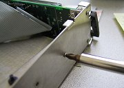You should now be able to see which four screws on the player's outer sides are the ones holding the tray assembly in place. Remove these four screws.
On some players, you may find the warranty seals here on the tray assembly. Break these seals if necessary.
Check to make sure that the tray assembly isn't stuck to the sides of the player. Some players were assembled with an excess of thread-lock compound on the tray screws, causing the mounts to be stuck to the sides of the casing. You should be able to gently flex the sides of the casing or pry at the side rails so that the assembly is loosened from the case. Don't try to pull on the tray assembly until you're sure that the side rails are loosened from the casing sides.
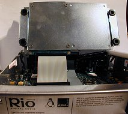Now lift the tray assembly out of the case gently. If you encounter resistance, you are doing it wrong. Make sure that no part of the drives, cables, or cradle are hanging up on any components inside the case. If you break a component off of the display board by trying to yank the tray out of the case, you will make Support very angry.
Click here to view a video file (4.17mb mpeg) of the procedure for removing the drive tray. Note where David points to the component that tends to get broken off if you do this procedure incorrectly.
If the rubber shock mounts have come undone from the assembly, we'll deal with them later. Just carefully remove the entire tray assembly.
Also, at no point should you attempt to remove the display board at the front of the unit. If you do, you run the risk of blowing several components on reassembly. Leave the display board alone, please.
Once the cradle is free, carefully note how the IDE cable is connected at both ends, using the stripe on the cable for reference. Make sure you know which pins are covered by the connector and which ones are not. Be very careful about this. when you re-assemble, it's very easy to get the connector mis-aligned by one pin. On some drives, the connector will seem to "fit" even if it's off by one pin.
Also make sure to note the orientation of the disk drive tray assembly i.e., which side points forward. There should be notches on the front ends of the side rails which correspond to the docking sled grip-hooks. And also note the orientation of the disk drives themselves in relation to the tray; the IDE connectors point toward the front of the player. When you re-assemble, it's critical to have all of these items oriented correctly.
Step 3: Disconnect the IDE cable
Do not try to unplug the IDE cable yet. Instead, carefully unscrew the drive from the tray so that you can easily get to its underside. Set the tray assembly aside.
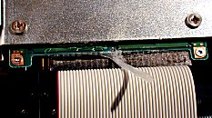Note: If you've got a Mark 2 manufactured after 8-14-2000, disconnecting the IDE cable will probably involve removing the strip of hot-melt glue they used to keep it connected during shipping. The glue is most likely on the underside of the drive, and it will take some careful work to remove it. Make sure not to damage the drive circuitry or the cable as you're removing the glue. Do not attempt to pull the cable off of the drive until you are sure there's no glue, or the glue has been removed. Click here to view a movie file of the procedure (4.2mb mpeg).
Now carefully unplug the IDE cable. Use caution not to rip apart the connector block in the process, this will damage the cable and cause drive errors, requiring cable replacement.
From this point on, you need to be absolutely clear about which drive is which (old and new). If necessary, use a sticky-note to clearly label the original drive. Now set it aside somewhere safe, we'll get back to it later.
Note: Most laptop disk drives will make a rattling noise if you shake them. This is normal. Do not panic if you hear a rattle while you are handling the loose disk drives.
Step 4: Inspection and repair
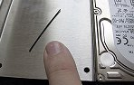On some players, you might find a small wire wedged between the disk drive pins and the IDE connector. This is to prevent the connector from being damaged by being squeezed on too far. If the loose wire makes you uncomfortable, you can discard it as long as you remember not to push the connector on too hard and damage it.
Inspect the IDE cable and make sure it's OK. On some early Mark 1 models, a messy solder on a jumper on the motherboard might have scarred the cable. Repair this as necessary. In my case I had to file down the jumper, resolder it, and protect the damaged cable with electrical tape. If you have to do this, use extreme caution and don't let any filings stay inside the case.
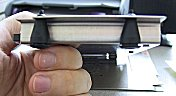Inspect the shock-mount tray assembly and make sure the rubber shocks have not popped out of the tray mounts. The Mark 1 units are more susceptible to this problem than the Mark 2 units. If they have come undone, pop them back in and use some RTV silicone glue to help them stay in place more permanently.
Make sure the bare surface of the drive tray is properly insulated in both drive spots. Most likely, you'll see some strips of electrical tape where the original drive used to be. If the second drive spot is bare, use electrical tape to insulate it in a similar fashion. Don't apply the tape too thickly or it will press against the bottom of the disk drive (a bad thing). When I did it, I made sure that the edges of the tape lined up exactly and did not overlap. Also make sure not to cover the mounting points (screw holes) with tape.
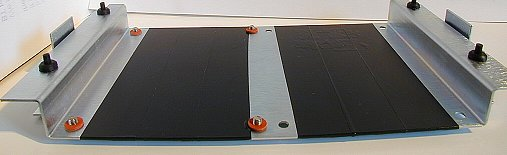
Step 5: Connecting the new drive
Plug in the new drive just like the old one was. Plug in only the new drive, keep the old one at a safe distance.
Use extreme care in connecting the IDE cable to the drive. It's easy to mis-align the connector since laptop drives don't have the "keeper shroud" that prevents you from plugging the connector on wrong. Most drives will let you plug it in "wrong" by one pin-position, and unless you look closely, it might look like it was plugged in "right".
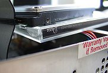For the formatting stage, you don't need to screw the new drive into the cradle unless you want to. The IDE cable should be long enough for you to format the drive when it's loosely tethered. Make sure you're not getting any metal contact with any electronic components, either on the bottom of the drive or in the player's innards. You might need to use a CD jewel case or a bit of folded paper to keep the drive from making contact. Don't plug the power cable into the player just yet.
Step 6: Formatting the new drive
In just a moment, you will be installing the Disk Builder upgrade software. The Disk Builder upgrade file is a special kernel that does nothing but wipe disks. It has no music player software or anything- all it does is look at whatever disks are plugged into the player and wipes them. It will format both disk drives if you have them both plugged into the player. You need to be completely clear on how it works before going any further. Please read the following warning carefully:
WARNING:
The Disk Builder upgrade goes into the player's flash RAM and will remain there until a regular upgrade is re-applied. While it's in the flash RAM, any disks plugged into the player will be instantly formatted. If you value the contents of a drive, do not plug it into the player until after you have applied a regular (non-builder) upgrade. |
Okay, got that? Good. If not, read it again.
Now get Hyperterminal prepared to monitor the serial output from the player. Complete instructions for this are located in the Customization section of the FAQ. You should already have an ".ht" file prepared and ready on the Windows desktop. Make sure it's ready to click on a moment's notice.
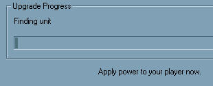All set? First step: make sure the power cord to the player is unplugged right now. Okay, now apply the Disk Builder upgrade, the one you downloaded as instructed at the beginning of this document. Just double-clicking on the .upgrade file should be all that it takes to launch the upgrade wizard and begin prompting you through the process. (If double-clicking on the .upgrade file produces a box asking you which application to run, then you don't have emplode installed. Re-install emplode and start over again.) Do not apply power to the player until it specifically prompts you to do so. When prompted, apply power to the player.
If, when you apply the power, the player sits there looking "dead" instead of booting, don't panic. You probably just plugged the IDE cable in wrong. Triple-check the IDE cable and make sure it isn't plugged in backwards, or "off by one pin".
If the player boots when you apply the power, but you get a "pump" error from the builder, please see the FAQ entry about pump errors.
When you apply power to the player, it should begin upgrading. What it's doing is putting the formatter code into flash RAM. As soon as it's done, the player will reboot and it will begin formatting your disk.
The instant that the upgrade has been applied, and the wizard is finished, run that Hyperterminal profile. Quickly! When the player reboots after the upgrade, you will see it reboot and it will start formatting the disk. You should see the formatter's output in ASCII on the serial port and on the screen of the player.
If the disk drive wasn't blank, the formatter may complain by saying 'disk is already built'. If this happens, you must prune the "fids" folder from the disk and apply the builder image again from scratch. Here is how to do that:
While still in Hyperterminal, get to a shell prompt. There's a chance that you might already be sitting at a shell prompt. If not, press ctrl-C and it should drop you to a shell. If not, see if sending a break command works (should be somewhere on the terminal program's menus).
type rwm (then press enter and wait a while for a shell prompt to appear)
type rm -r /drive0/fids (then press enter)
type rom (then press enter)
If everything worked, then pull the player's power, close Hyperterminal, and restart the procedure as described above, applying the builder image and launching Hyperterminal as soon as it's been applied, to make sure it didn't stall again a second time.
|
Eventually, it will complete the formatting of the disk. If you're using a factory builder, it will start a disk stress-testing loop at this point. (Note: Mark Lord's Bigdisk Builder does not do a stress testing loop.) If you are at all concerned about the reliability of the disk drive, you should let this stress test run for quite a while- at least a couple of hours. Although this isn't required (you can terminate the stress test at any time simply by unplugging the power), it's a good idea. The player's screen will eventually go blank during the stress test, you can wake up the screen by pressing a front-panel button (there will be a pause before the screen appears). Note that if you are formatting two disks at the same time, it will only stress test the first disk drive. If you want to stress test the second disk, you must swap it into the primary drive slot and run the factory builder again. When you're satisfied that the disk has been stress tested enough, exit Hyperterminal and remove the power cable from the player.
Important: With the new drive still plugged in, apply the standard developer upgrade of the player software (but see the special note for large disks, below). You know, the one that you had ready ahead of time. You should do this even if the drive is only intended as a secondary drive. The reasons are multifold: To prevent the kernel from trying to fry the old disk when you reattach it in the next step, to make sure all the folders are in their proper places, and to let the drive work as a "backup" drive should the primary drive fail. If you are formatting two fresh, blank disks, you should install the the developer build onto both of them (by swapping them into the primary drive slot and applying the upgrade individually).
Assuming that the developer upgrade worked, the new disk drive is now a fully functional boot disk, with player software and everything. It is also safe to plug in the old drive again because you've just overwritten the Disk Builder kernel in the flash RAM.
Note that the next time you apply power to the player, if you have the old and new disk drives plugged in at the same time, you may get an error message similar to "Database size mismatch" and the player will attempt to rebuild its database. This will be corrected later, just continue with the instructions and don't be alarmed at the error message.
Special note for large drives: You might run into a problem if your disk drive is larger than about 40-60 gigabytes. The official empeg builder image hasn't been updated to support large disks. It sometimes runs out of memory when building the music partition. This will manifest itself as disk drive errors when the player boots or when you try to put music onto the player. If this happens, there are a few things you can try: You can use Mark Lord's Special Disk Builder for large disks. You can try to apply the builder image a second time (starting the procedure from the top). Sometimes this is enough. You can also partition and format the hard disk manually. If your disk is larger than 128 gigabytes, make sure to install the latest Hijack Kernel before partitioning and formatting manually. You will also need to re-install the latest Hijack Kernel after installing the player software onto the player.
Additional note for drives larger than 160 GB: The official empeg upgrader will corrupt the disk if it's 160 gigabytes or larger. Use 2.01 Final Software Installer for Large Disks, instead. If you have a Mk1 player and you're trying to do a 160 gig disk... at the time of this writing I don't think there's a solution for you.
Step 7: Copying files (special circumstances only)
If you need to move the music from one drive to another, you'll need to copy all of the files in the "fids" directory. You don't need to do this if you're simply adding a second disk drive. Skip ahead to the next section if you're simply adding a blank second disk drive.
There are several scenarios where you might want to copy the music to another drive, but I will give step-by-step instructions here for just one scenario: The complete replacement of the primary disk drive. If you understand what's being done here, you probably will have enough information to handle the other possible situations that might arise. For example, if you are replacing both drives instead of just one drive, repeat the entire procedure to copy the files from the old secondary drive to the new secondary drive.
- After formatting the new drive and installing the developer version of the player software onto it, leave it plugged into the primary drive spot.
- If you have large disk drives (larger than 128 gigabytes or so), re-install the latest Hijack Kernel
- Remove the power from the player.
- Plug the old drive into the secondary spot (setting master/slave jumpers as necessary if it's a Mark 2 player, or using the second IDE header and second cable if it's a Mark 1).
- Launch your Hyperterminal profile.
- Apply power to the player and watch it boot in Hyperterminal. Make sure it detects both disk drives correctly.
- Via Hyperterminal, Press q (Enter) to drop to the shell prompt.
- Read-write mount the disk drives. Type:
rw (Enter)
rwm (Enter)
There will probably be a pause before the shell prompt appears again.
- Copy the files from the second drive to the first drive:
cp -auvfx /drive1/fids /drive0/ (Enter)
- Depending on the drives and the amount of data, it might take a surprisingly long time to complete the copy operation. Be prepared for a long wait. Some users have reported that it can take hours.
- When it's done, read-only mount the disk drives. Type:
ro (Enter)
rom (Enter)
- Log out of the shell and drop back to the player software: logout (Enter)
- Close Hyperterminal. Unplug the power cable and remove the old drive (or put it on the primary controller and format it if you like- but don't forget to re-install a safe bootable kernel/player to it).
- If desired, you can copy information from your old second drive onto the new drive. For example, if you are replacing two 10 gig drives with a single 40 gig drive (intending to discard or sell both of the 10s and use only the 40), then you can copy the FIDs from both of the 10 gig drives onto the 40 and it will work. As long as the two 10 gig drives came from the same player, there should not be any file conflicts because the FIDs are designed to be unique within each player's database. This won't work to combine the music from a different player, though. If you want to merge the music from two different players, you have to do it the old-fashioned way.
- When you're done copying and formatting, re-assemble the player per the assembly instructions in the next section.
- Use Emplode to perform a couple of synchronizations. It may require a few player reboots and/or re-synchs with Emplode before the player rebuilds its database properly and the music appears correctly in the list.
Another thing that might come up is that you might want to copy the dynamic data partition between two disk drives. The master disk drive contains a special partition which stores the following information:
- The current song running order.
- Any stored bookmarks.
- EQ and Tuner presets.
- Dynamic data about each song, such as the number of times played and the last time played.
If you need to preserve this information, use the "dd" command at the shell prompt to copy this partition:
dd if=/dev/hda3 of=/dev/hdc3 (Enter)
to copy from master to slave, or
dd if=/dev/hdc3 of=/dev/hda3 (Enter)
to copy from slave to master.
If desired, you can also copy the player configuration file "config.ini" from the old drive to the new drive. This file stores information from the "configure player" screen in Emplode. Because most of the information could simply be re-entered in Emplode, copying this file is not always necessary. The information stored in this file includes:
- The owner's name and phone number.
- Details of the Wendy filters and the favorite visuals.
- Ethernet network configuration.
- Configuration information for certain third-pary software such as the Hijack kernel.
If you want to copy this information, first, set the drives to read-write with the rwm command as described above, then use the "cp" command at the shell prompt to copy this file:
cp /drive0/var/config.ini /drive1/var/config.ini (Enter)
to copy from master to slave, or
cp /drive1/var/config.ini /drive0/var/config.ini (Enter)
to copy from slave to master.
Don't forget to set the drives back to read-only with the rom command when you're done.
Step 8: Putting it back together
If you're just adding a second drive, all you need to do now is put the new disk onto the secondary controller (or the slave spot if it's a Mark 2- check the drive's docs for the proper jumper settings), put the old disk back onto the primary controller, and put it all back together. As they say in the automotive manuals, "Installation is the reverse of removal."
Make sure to orient all of the items (drives, trays, IDE cables, etc.) the same directions that you noted when you took it all apart. If the tray is backwards, or the drives are not facing the correct direction on the tray, you'll have problems.
|
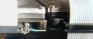If you have added a jumper to the secondary disk drive, make sure that the jumper is well-secured. Some users have reported that the jumpers can come loose from the pins after a period of time, which causes the player to stop booting. There are several ways you can go about securing the jumper, including carefully bending the pins, using a dab of hot-melt glue, or covering it with electrical tape.
|
Remember the washers I told you about at the beginning of this guide? Use them now, when re-assembling, to stand the disk drives off from the cradle. Although this might not strictly be required for your particular brand of drive, it adds a good measure of safety in all cases.
Note: It has been reported that the drive mounting screws can work loose on some players, causing serious problems if the screw contacts certain components on the motherboard. When screwing the drives to the cradle, tighten them securely and use either threadlock compound or a dab of hot-melt glue to make sure they stay in place if possible.
Optional: If you think it's important, use a small dab of hot-melt glue to secure the IDE cables in place on the drives. This is entirely dependent on just how rough you intend to be with the player, and if you don't mind opening the player again to re-seat the cable if it comes off. Personally, I prefer to go without any glue, because the hassle of re-seating the cable once is a blue moon is nothing compared to the hassle of picking off that nasty glue when I want to upgrade my disks. If you decide you need to do the glue, here is a movie (4.5mb mpeg) of the procedure.
Putting the cradle back in place should be fairly simple on the Mark 2, and just a bit tricky on the Mark 1.
|
The Mark 1 has less space and more "sticking out" components than the Mark 2 does. Most notably, the frontmost edge of the disk drives tend to want to bump up against the display board, and this is a Bad Thing. So be very careful.
In my case, the secondary IDE cable's connector was interfering with a component on the display board, and I actually had to file down the corner of the plastic connector to make sure there was enough clearance so that it wouldn't bump the component when the cradle moved.
Also, as the cradle is inserted, check to make sure that the secondary IDE cable does not interfere with the sub-boards that rise above the motherboard in the back of the unit. You may have to deliberately crease the secondary IDE cable so that it sits nicely beneath the cradle without bumping these boards.
|
Whatever you do, be careful not to force anything when re-assembling the unit. Everything should be done gently and carefully. If you encounter resistance, search for the source of the resistance before going any further.
Check the movement of the shock-mount tray after installing it and screwing it down. Make sure it has the correct travel so that it can do its job without bumping into other components in the case.
Optional: After you've checked the shock-mount travel and it's all OK, you might want to re-do the screws that hold the tray assembly to the sides of the case, this time with thread-lock compound.
Replace the top lid.
|
If you've got a Mark 2, replace the lens, buttons, fascia, and knob. Make sure the buttons go back on in the same way they came off. The left and right buttons are unique, make sure they go on in the proper direction.
When you screw the faceplate back on, don't overtighten the screws. They should be just tight enough to hold the face on. If they are too tight, they will cause the buttons to stick. On my Mark 2, I am able to tighten the bolts pretty tight, but I have to carefully adjust the position of the fascia before I do it. Some practice and trial-and-error may be involved. |
Now boot up your player with Hyperterminal running, and check to make sure both drives are found during the boot process.
If all is well, exit Hyperterminal and run Emplode. After a couple of synchs, it should be able to fully rebuild its database, and you should see the new capacity in the lower-right corner of the window.
You're done!
|
|
|